The specialty pop-up menu.
Swan Marina Saturdays, Jamaica Bay.
Every week, on the water.
Thursday through Sunday, July to late September.
The vibe, in pictures.
The real thing: the deck, the dock, and the bay at Swan Marina.
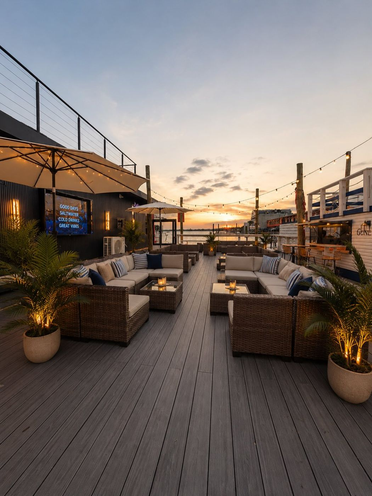
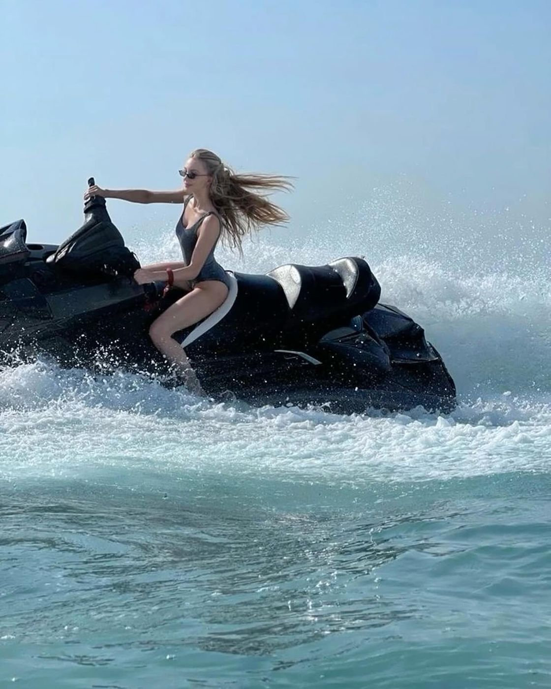
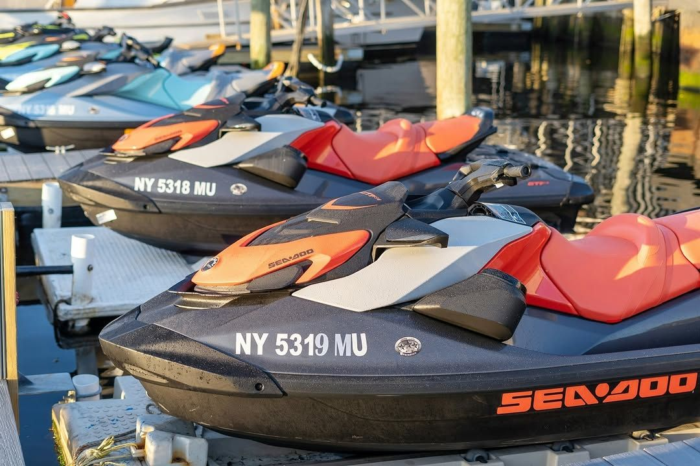
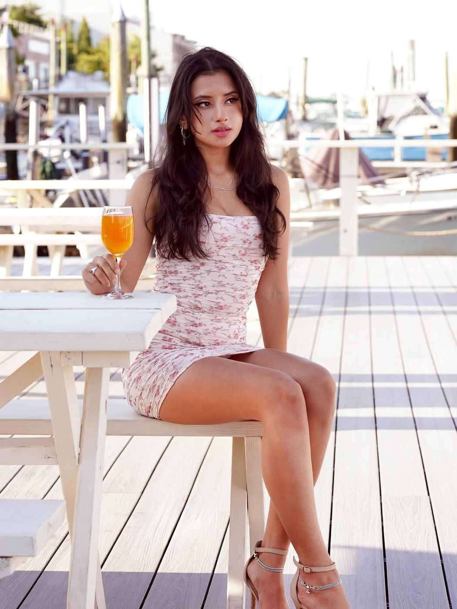
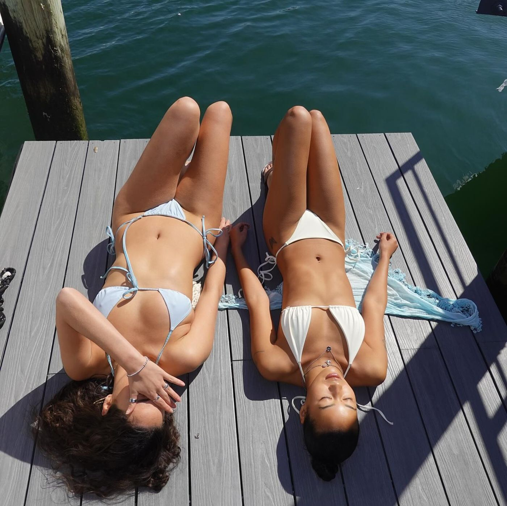
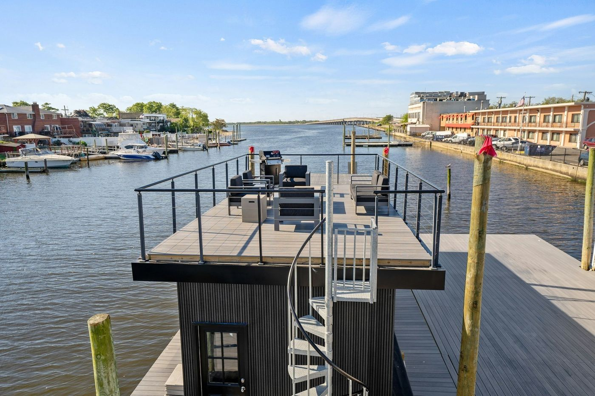
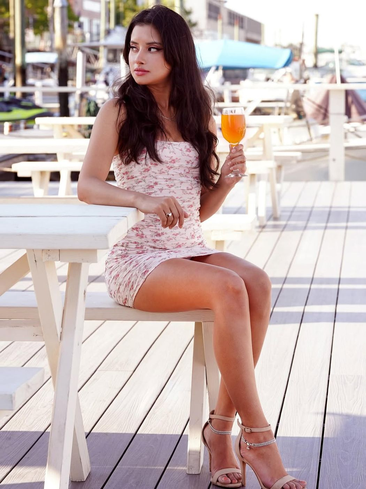
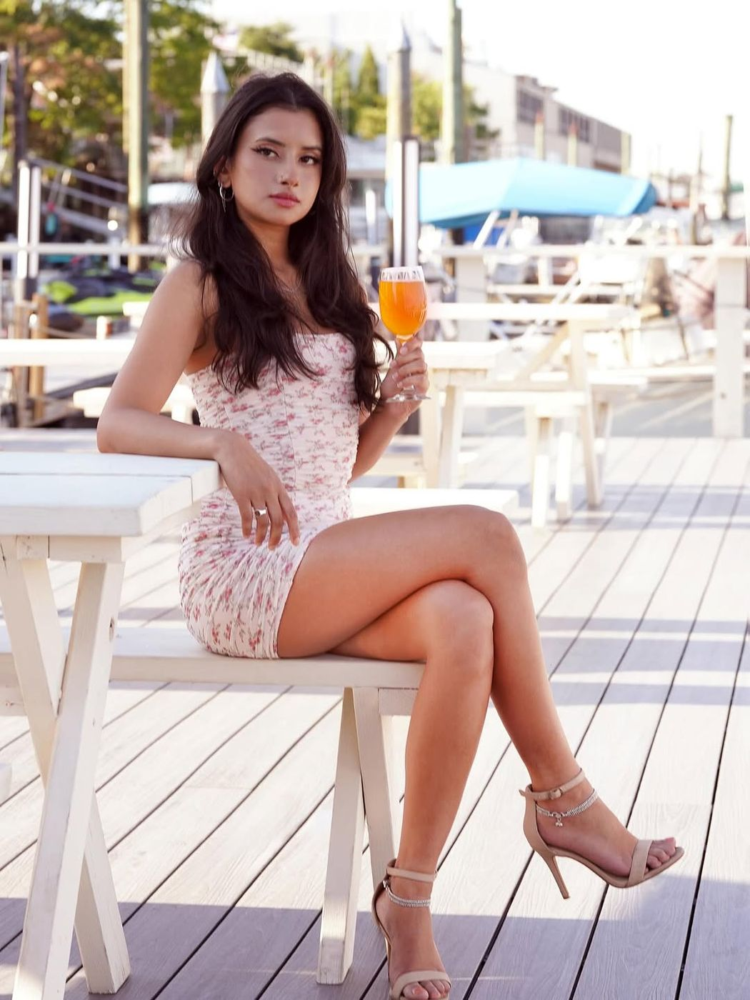
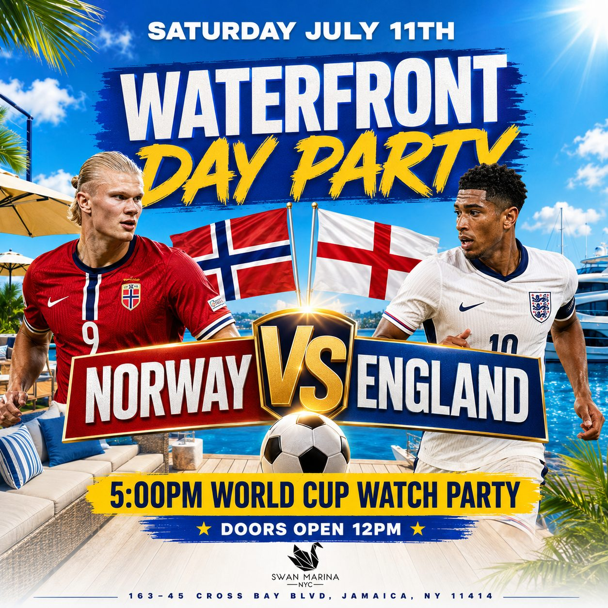
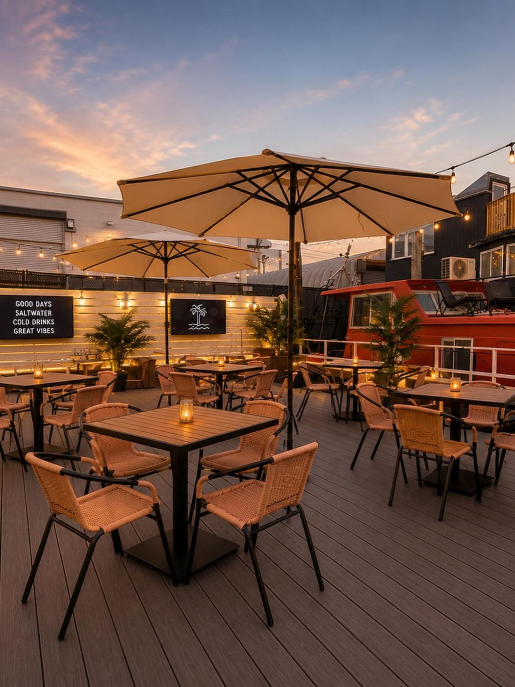
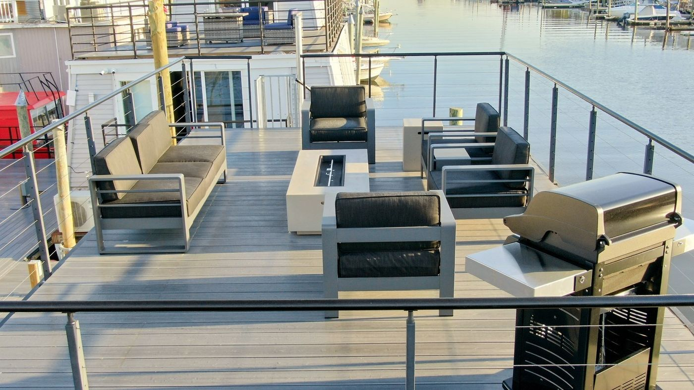
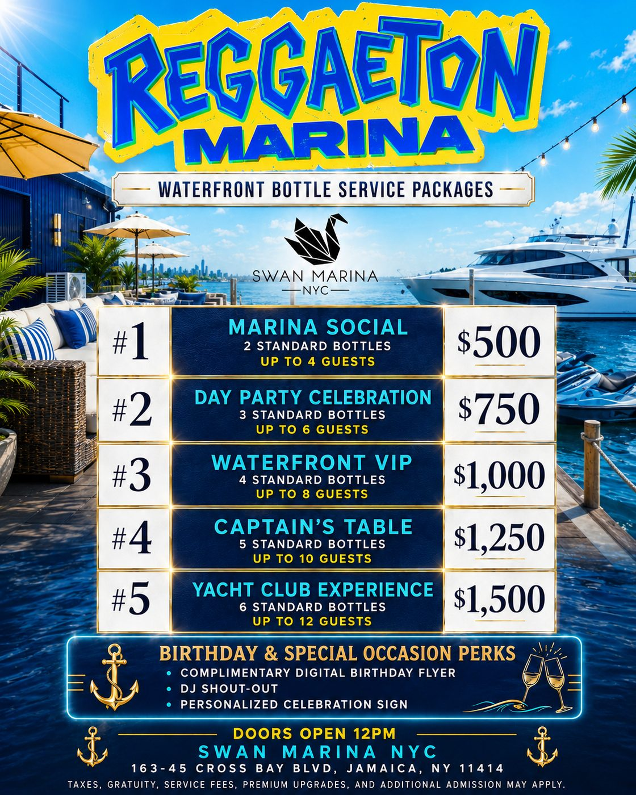
Maui has docked.
Welcome to Maui at the Marina: a limited-time summer waterfront pop-up bringing the spirit of the islands to 163-45 Cross Bay Blvd, Jamaica, NY 11414.
Escape the city without leaving it. Tropical-inspired food, handcrafted cocktails, waterfront dining, live DJs, and unforgettable sunsets in a one-of-a-kind marina setting.
Arrive by land or by water. Dock your own boat and spend the day with us, or rent a jet ski or boat and explore the bay before coming back to eat, drink, and unwind. Whether you're joining us for brunch, dinner, or a full day on the water, Maui is your summer destination.
This summer, Maui has docked at the marina. Come experience the ultimate waterfront escape.
🌴
Waterfront dining
🍹
Tropical cocktails
🛥️
Guest boat docking available
🌊
Jet ski & boat rentals
🎶
Live DJs & weekend entertainment
☀️
Brunch, lunch, dinner & sunset vibes

Tie up and come in.
Walk-ins on the dock. Reservations inside for parties of four or more.
Address
163-45 Cross Bay Blvd
Jamaica, NY 11414